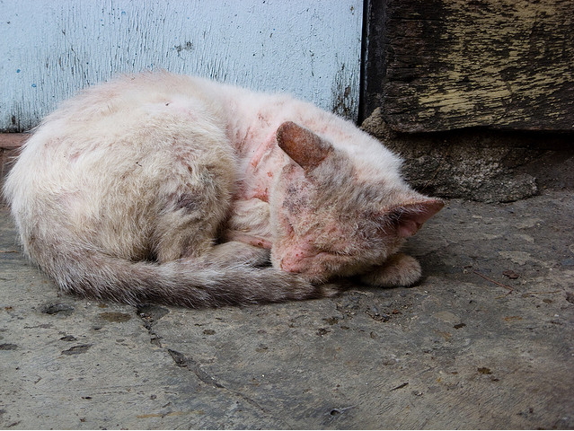
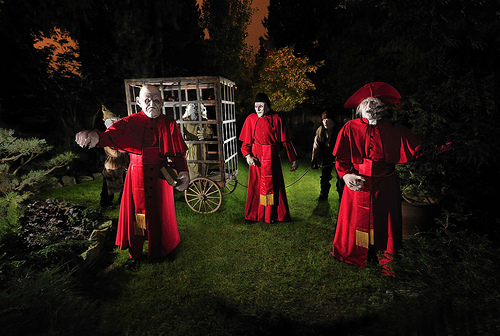

- Advocacy
- Animal
- Art
- Children
- Community
- Cultuer
- Education
- Health
- Housing
- Religion
- Service
- Youth
- Burnaby
- Coquitlam
- Delta
- Downtown Vancouver
- Langley
- Maple Ridge
- New Westminster
- North Vancouver
- Pitt Meadows
- Port Coquitlam
- Richmond
- Surrey
- Vancouver
- West Vancouver
- White Rock
Categories
Locations
Explore Projects
Fund and follow your favourite projects. Start your discovery!
Featured

Downtown Eastside Women’s Centre
Downtown Eastside Women’s Centre is fundraising for supplies for their new shelter on Columbia St. The Shelter aims to provide a safe place for wome and their children
 East Vancouver, BC
East Vancouver, BC
40%
funded
$542
raised
20
days left

Annual Great Canadian Shoreline Cleanup
Vancouver Aquarium
Vancouver Aquarium is cleaning up 5 local beaches to save the environment! Donations go towards equipments, bags, and other program cost.
Vancouver, BC
40%
funded
$542
raised
20
days left

Build New Playgrounds for Vancouver Children
Foresters
Foresters is building new playgrounds to serve 12,000 Children and their Family in the Vancouver Area
Vancouver, BC
40%
funded
$542
raised
20
days left
New

Vancouver Humane Society
The "Save the Cats" program aims to provide shelter, food, and medical care for 1000 abandoned or injured cats in the Greater Vancouver Area.
Burnaby, BC
40%
funded
$542
raised
20
days left

Independent Quality Home Care
Independent Quality Home Care is dedicated to provide superior professional home care for 125 seniors in White Rock.
White Rock, BC
40%
funded
$542
raised
20
days left

Dunbar Haunted House
Dunbar Haunted House has been raising over $67,000 for the BC Fire Fighters Burn Fund, Christmas Bureau, and Police Union Charity. We are fundraising for equipments, paints, and costumes for the new 2011 Haunted
Vancouver, BC
40%
funded
$542
raised
20
days left